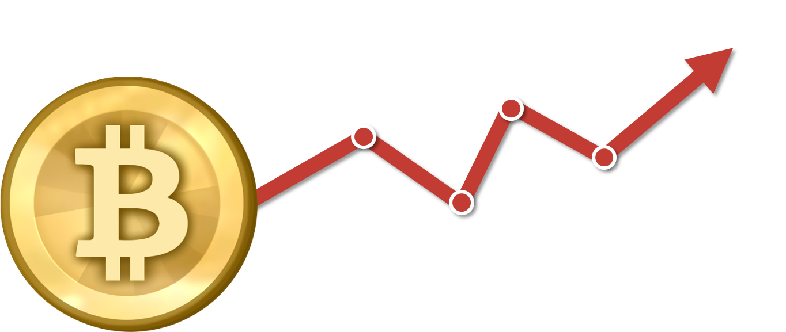

Milhares de notícias são publicadas diariamente. Na maioria das vezes elas refletem nos acontecimentos do dia-a-dia. Pensando nisso, essa ferramenta visa avaliar se uma notícia específica contribui positivamente, negativamente ou não contribui com o valor do bitcoin.
Esse trabalho foi desenvolvido para disciplina de Big Data no período 2016/1. Universidade Federal do Rio de Janeiro
